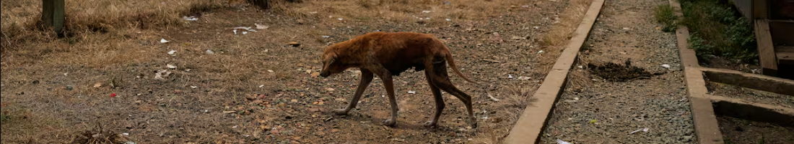
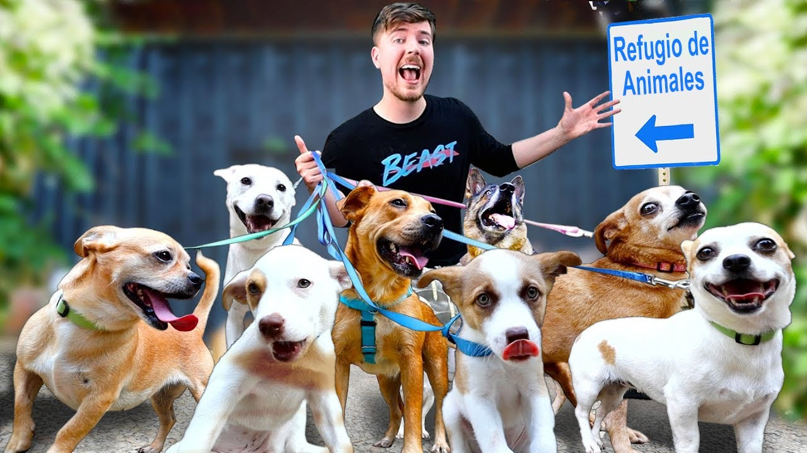
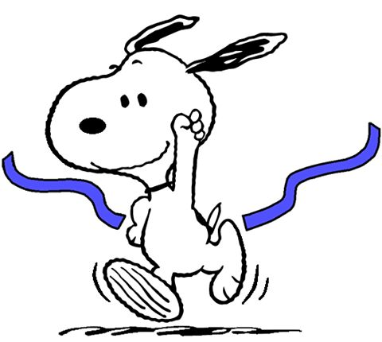

Conócenos
Somos un equipo de personas impulsadas por la empatía hacia los animales, reconociéndolos como nuestros semejantes debido a su capacidad para experimentar placer, alegría, dolor y sufrimiento.
Nuestra misión consiste en inspirar un cambio de mentalidad que repercuta positivamente en la crítica situación que enfrentamos, vinculada a la sobrepoblación, el abandono, la crueldad y la indiferencia que afectan a millones de perros y gatos en nuestro país.

¿Cómo desarrollamos nuestras actividades?

Acción directa
Intervenimos directamente en la asistencia a animales abandonados en situaciones críticas, proporcionándoles atención médica y fomentando su adopción posterior por parte de hogares responsables.

Acción preventiva
Organizamos campañas de castración gratuitas y/o de bajo costo en áreas de alta vulnerabilidad donde la presencia estatal es ineficiente y los perros y gatos se reproducen sin control.

Acciones judiciales y legislativas
Exigimos el cumplimiento de las leyes existentes y respaldamos la presentación de proyectos de ley que beneficien a los animales, contribuyendo así a su protección y bienestar.

Acciones solidarias
Establecemos colaboraciones estrechas con entidades de bien público, organizaciones y activistas que comparten nuestros objetivos, fortaleciendo la red de apoyo y compromiso hacia la causa animal.